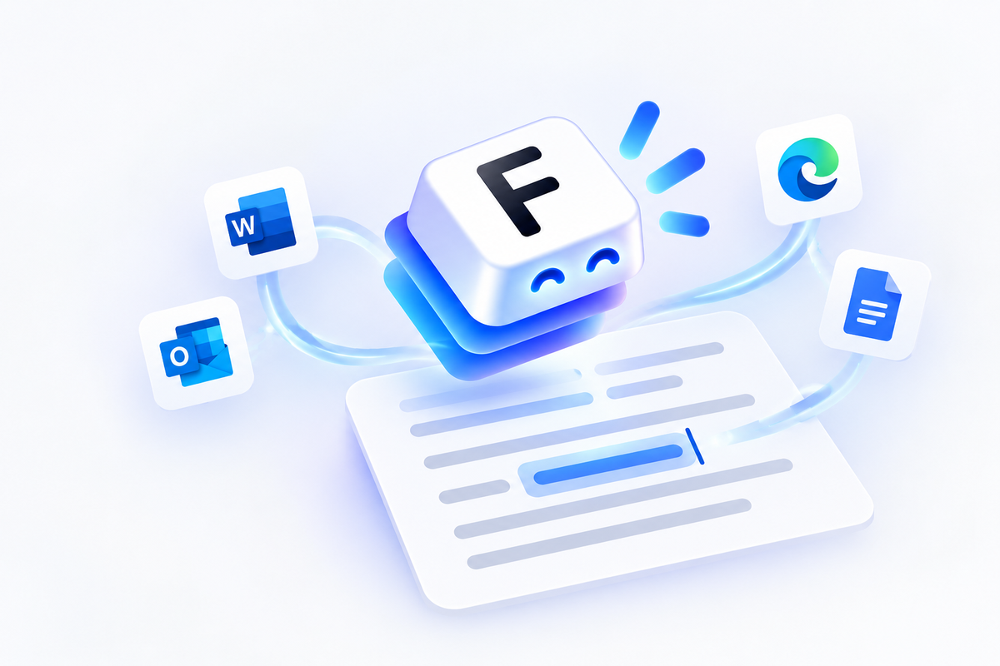
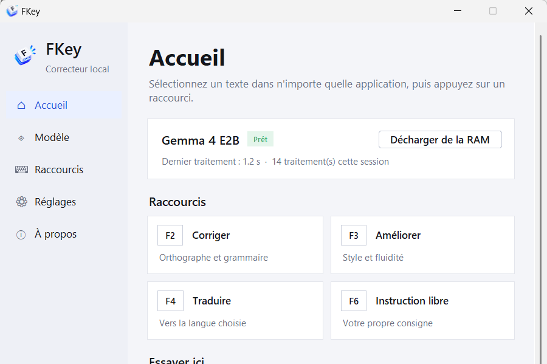

Corrigez vos textes d'une touche.
Sans internet.
Sélectionnez un texte dans Word, Outlook ou votre navigateur : il est corrigé sur place. L'IA tourne sur votre ordinateur, rien ne part sur internet.
Télécharger pour Windows gratuit · sans installation · sans compte
Essayez ici
Un document avec six fautes. Appuyez sur F2 pour tout corriger — ou sélectionnez d'abord une phrase pour ne corriger que celle-là. C'est exactement ce que fait FKey dans vos applications.
Comment ça marche
FKey attend dans la zone de notification. Il agit là où vous écrivez, dans n'importe quelle application.
Sélectionnez un texte
Un mot, une phrase, un mail entier — dans Word, Outlook, Teams, votre navigateur…
Appuyez sur une touche
F2 corriger · F3 améliorer · F4 traduire · F6 instruction libre.
C'est remplacé
Le résultat prend la place du texte, en une à quatre secondes. Votre presse-papiers est préservé.
L'application
Un assistant au premier lancement, des réglages simples, et FKey se fait oublier.

- Prêt en deux minutesL'assistant télécharge le modèle recommandé (≈ 3 Go, une seule fois).
- RéglableTouches, langue de traduction, modèle, lancement avec Windows.
- 100 % privéPas de compte, pas de serveur. Vos textes ne quittent jamais l'ordinateur ; fonctionne hors ligne.
Choisissez votre version
FKey fonctionne localement sur Windows et sur Mac. Les raccourcis et le moteur d'IA dépendent de votre système.
Installer sur Windows v1.0.1
Archive portable : décompressez, lancez, c'est tout.
⬇ FKey-portable.zip 37 Mo · Windows 10/11 64 bits- 1Décompressez le dossier où vous voulez.
- 2Lancez FKey.exe et suivez l'assistant.
- 3Sélectionnez un texte, appuyez sur F2.
Questions fréquentes
Quelle configuration faut-il ?
Sur Windows : Windows 10 ou 11 en 64 bits, 8 Go de mémoire vive recommandés (le modèle en occupe environ 2,7 Go) et 4 Go d'espace disque. Sur Mac : puce Apple, macOS 26 ou plus récent et Apple Intelligence activé.
Ça marche vraiment sans internet ?
Oui. Une connexion n'est nécessaire qu'une fois, pour télécharger le modèle. Ensuite tout fonctionne hors ligne.
Windows affiche un avertissement au lancement
FKey n'est pas encore signé numériquement. Cliquez sur « Informations complémentaires » puis « Exécuter quand même ». Le code source est public.
macOS bloque l'ouverture de FKey
La version Mac de test n'est pas encore signée et notarisée avec un compte Apple Developer. Après avoir glissé FKey dans Applications, essayez de l'ouvrir, puis utilisez « Ouvrir quand même » dans Réglages Système → Confidentialité et sécurité. Autorisez aussi l'accès Accessibilité demandé au premier lancement.
Comment désinstaller ?
Quittez FKey depuis la zone de notification et supprimez le dossier. Si le lancement automatique était activé, désactivez-le d'abord dans Réglages.